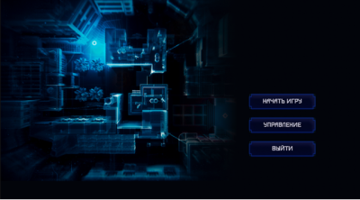
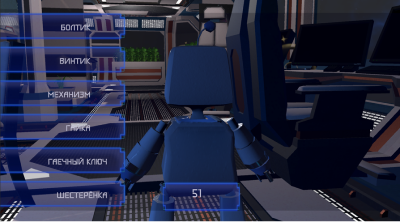
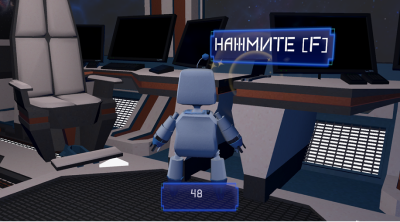

Игра про Робота, который работал в своей лаборатории и к нему
прилетел слайм и сломал механизм, теперь роботу предстоит собрать
все детали и восстановить работу лаборатории.

Чтобы найти все детали, он выходит в другую комнату и собирает
нужные предметы в инвентарь, в комнате запущен таймер, поэтомй надо
успеть вложиться в отведенное время.

Если вы не успеете собрать все предметы, вам приедтся начать
проходить эту сцену заново, таймйер возобновляется, все ваши
достижения обнуляются, инвентарь снова пустой.
Сентабрь 2022
Идея!
Выбор темы, написание сценариев, структуры игры.
октябрь 2022
Разработка!
Создание сцен, разаботка объектов и персонажей.
ноябрь 2022
Программирование!
Реализация анимаций движения и взаимодействия, переходов между
сценами и прочей логики игры.
декабрь 2022
Тестирование!
Отладка, оптимизация, тестирование и внедрения готового симулятора
на сайт.